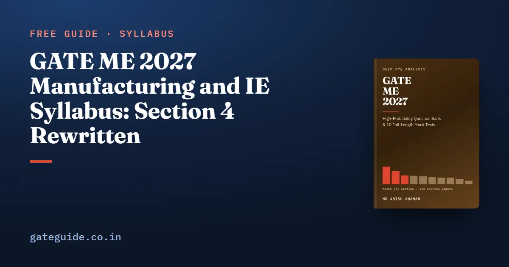

GATE ME 2027 Manufacturing and IE Syllabus: Section 4 Rewritten

Section 4 of the GATE ME syllabus, Materials, Manufacturing and Industrial Engineering, is where the 2027 document changed most: 38 of its 2027 phrases are new and 18 of its 2026 phrases are gone. It is also where the most marks sit. This guide shows what was rewritten paragraph by paragraph, and why this is where old notes are most out of date.
In this guide
Key takeaways
- Section 4 went from 52 phrases in 2026 to 72 in 2027.
- Additive Manufacturing and Computer Aided Manufacturing and Automation are new paragraphs.
- Production Planning and Control grew from 5 phrases to 12, with seven additions.
- Materials, Manufacturing and Metrology was the largest technical subject in all six counted papers, a mean of 17.4 marks a year.
- Actuators, PLCs, work study, productivity, six sigma and quality and reliability have no counted question.
- Old notes for this section need checking line by line against the 2027 PDF.
What Section 4 covers, and how the book splits it
Section 4 is one syllabus section with eight paragraph labels in 2027. The book splits it into two subjects. Materials, Manufacturing and Metrology takes Engineering Materials, Casting, Forming and Joining, Machining, Additive Manufacturing, Metrology and Inspection, and Computer Aided Manufacturing and Automation. Industrial Engineering takes Production Planning and Control and Operations Research.
The two subjects carry very different weight. Over the six counted papers, Materials, Manufacturing and Metrology drew 15, 17, 21, 16, 20 and 14 marks, and Industrial Engineering drew 8, 8, 2, 8, 6 and 10.
Remember: The largest subject in the paper and the most rewritten part of the syllabus are the same block. That is why old notes cost the most here.
Paragraph by paragraph: what moved
| 2027 paragraph | 2026 phrases | 2027 phrases | Added | Removed | Reworded |
|---|---|---|---|---|---|
| Engineering Materials | 4 | 7 | 0 | 0 | 2 |
| Casting, Forming and Joining | 12 | 16 | 1 | 0 | 3 |
| Machining and Machine Tool Operations | 11 | 11 | 3 | 0 | 2 |
| Additive Manufacturing (new) | 0 | 4 | 4 | 0 | 0 |
| Metrology and Inspection | 9 | 9 | 0 | 0 | 1 |
| Computer Aided Manufacturing and Automation (new) | 0 | 6 | 4 | 0 | 0 |
| Production Planning and Control | 5 | 12 | 7 | 0 | 0 |
| Operations Research | 7 | 7 | 0 | 0 | 0 |
Two 2026 paragraphs are gone. Computer Integrated Manufacturing split between the two new paragraphs. Inventory Control moved under Production Planning and Control.
Engineering Materials and Casting, Forming and Joining
Engineering Materials widened. It now names the crystal structure of common metals, the families of metals and alloys, polymers, composites and ceramics, and both engineering and true stress-strain diagrams.
Casting, Forming and Joining gained casting defects, solid-state welding and non-destructive testing methods. The forming line dropped its named examples but still covers bulk and sheet forming and the load each needs.
Machining
Machining was reorganised rather than cut. It now names basic machining operations and machine tools, single-point and multipoint cutting tools, and the geometry of single-point turning tools in the ASA and ORS systems. NC/CNC moved out to the new automation paragraph.
Trap: "NC/CNC machines and CNC programming" did not leave the syllabus. It moved word for word into Computer Aided Manufacturing and Automation. Check the new paragraph before you assume a topic is gone.
The two new paragraphs
Additive Manufacturing asks for the principles of the different process types and the advantages, limitations and applications of printed parts. It is not new to the papers: additive manufacturing drew marks in five of the six counted papers when it was one phrase under Computer Integrated Manufacturing.
Computer Aided Manufacturing and Automation combines CAD/CAM and NC/CNC, which the papers examined in all six, with two genuinely new lines: pneumatic, electro-pneumatic and hydraulic actuators, and programmable logic controllers.
Worked example: two calculations the new paragraph supports
First, a CNC axis. A stepper motor moves 1.8° per pulse and drives a lead screw of 4 mm pitch directly. The basic length unit is the distance moved per pulse:
A feed of 120 mm/min is 2 mm/s, so the controller must send pulses per second.
Second, a pneumatic cylinder at 5 bar (0.5 MPa) with a 40 mm bore and 16 mm rod. Extending, force is pressure times bore area: N. Retracting, the rod takes up area: N.
In one line: The retracting force of a cylinder is always smaller, because the rod covers part of the piston face.
Production Planning and Control: the biggest single expansion
No paragraph gained more. The 2027 line reads: work study, productivity, forecasting models, aggregate production planning, scheduling, materials requirement planning, six sigma, lean manufacturing, inventory control with deterministic models and safety stock, and quality and reliability concepts for product lifecycle analysis.
| Item | Status in 2027 | Counted papers, 2022-2026 |
|---|---|---|
| Inventory control | Moved in from its own paragraph | All six |
| Forecasting, scheduling | Long named | Three each |
| Work study, productivity, six sigma, quality and reliability | Newly named | None |
| Lean manufacturing | Long named | None |
Industrial Engineering's own range was 2 to 10 marks, so plan for the width of that range rather than a single number.
Why this block is where old notes fail you
Put the two facts side by side. Materials, Manufacturing and Metrology carried 103 of the 510 technical marks in the six counted papers, 20.2 per cent, more than any other subject. And Section 4 is the part of the syllabus that changed most. A candidate using notes written for 2026 or earlier is least prepared exactly where the paper has been heaviest.
The subject is also broad. Nine of its topic groups drew marks, and none carried more than 18 marks over six papers. Four groups appeared in all six papers: the mechanics of machining with tool life and economics, engineering materials, machining operations, and CAD/CAM with NC/CNC. Forming, casting, metrology, joining and additive manufacturing each appeared in five. Breadth matters more than depth here, so a missing line in your notes is a missing group, not a missing detail.
How to update your notes
- Print the 2027 Section 4 text and your old notes' contents page side by side.
- Mark every 2027 phrase your notes do not cover. Expect most gaps in automation and Production Planning and Control.
- Move NC/CNC and CAD/CAM notes under the new automation heading.
- Keep every forming process; the general line still covers them.
- Practise the numerical lines with a pen; 30 of this subject's 68 counted questions were NATs.
The book reproduces every Section 4 phrase before and after, with the topic-wise marks inside both subjects, in the GATE ME 2027 book. The NAT rules are common to every paper; the marking scheme guide, written for CSE but valid for ME, explains them. Practise feed and force numericals on the GATE virtual calculator. For who wrote this syllabus, read about IIT Madras as organising institute.
Quick revision
- Section 4: 52 phrases became 72; 38 new, 18 gone.
- New paragraphs: Additive Manufacturing; Computer Aided Manufacturing and Automation.
- NC/CNC and CAD/CAM moved, not dropped.
- New with no counted question: actuators, PLCs, work study, productivity, six sigma, quality and reliability.
- BLU = pitch × step angle / 360°.
- Cylinder force: extending, retracting.
- Materials, Manufacturing and Metrology: largest subject in all six papers, 14 to 21 marks.
Frequently asked questions
What changed in the GATE ME 2027 manufacturing syllabus?
Section 4, Materials, Manufacturing and Industrial Engineering, changed most: 38 of its 2027 phrases are not in 2026 and 18 of its 2026 phrases are not in 2027. Additive Manufacturing and Computer Aided Manufacturing and Automation became paragraphs of their own, and Production Planning and Control grew from 5 phrases to 12.
Is manufacturing the most important subject in GATE ME?
By counted marks, yes. Materials, Manufacturing and Metrology was the largest technical subject in all six papers from 2022 to 2026, at 14 to 21 marks and a mean of 17.4 a year. It carried 103 of the 510 technical marks, about a fifth. That is a pattern over six papers, not a promise about 2027.
Are PLCs and actuators in the GATE ME 2027 syllabus?
Yes. The new Computer Aided Manufacturing and Automation paragraph names pneumatic, electro-pneumatic and hydraulic actuators for automation and programmable logic controllers, alongside CAD/CAM and NC/CNC programming. No counted paper from 2022 to 2026 set a question on actuators or PLCs, so read them from the syllabus line.
What was added to Production Planning and Control in GATE ME 2027?
Seven phrases: work study, productivity, six sigma, the three inventory phrases moved from the old Inventory Control paragraph, and quality and reliability concepts for product lifecycle analysis. Work study, productivity, six sigma and quality and reliability have no counted question in the six papers. Inventory control itself was examined in all six.
Sources
- GATE 2027 official website (IIT Madras)
- GATE 2027 ME syllabus (IIT Madras)
- GATE 2026 ME syllabus (IIT Guwahati)
Dates, fees and the syllabus are set by the GATE 2027 organising institute and can change. Always confirm at gate2027.iitm.ac.in.